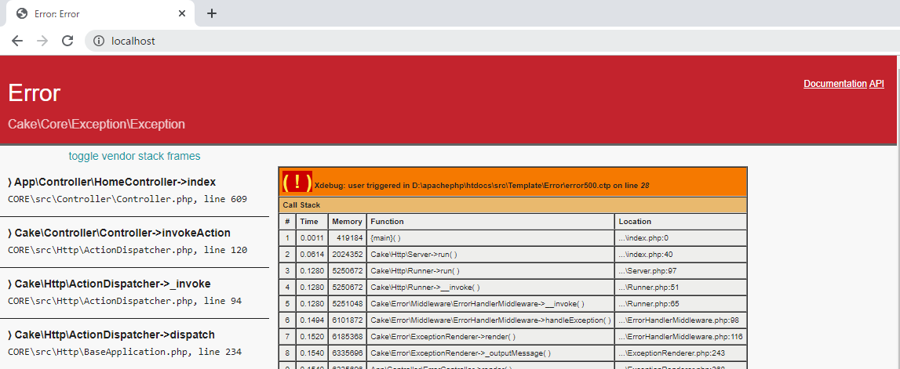
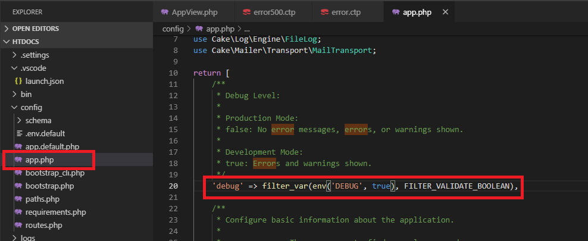
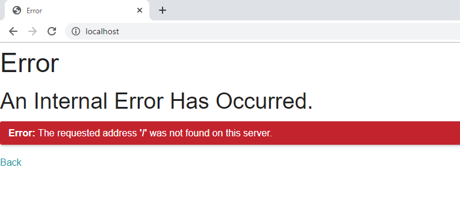
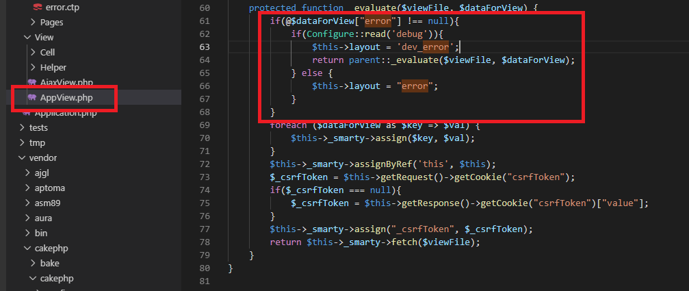
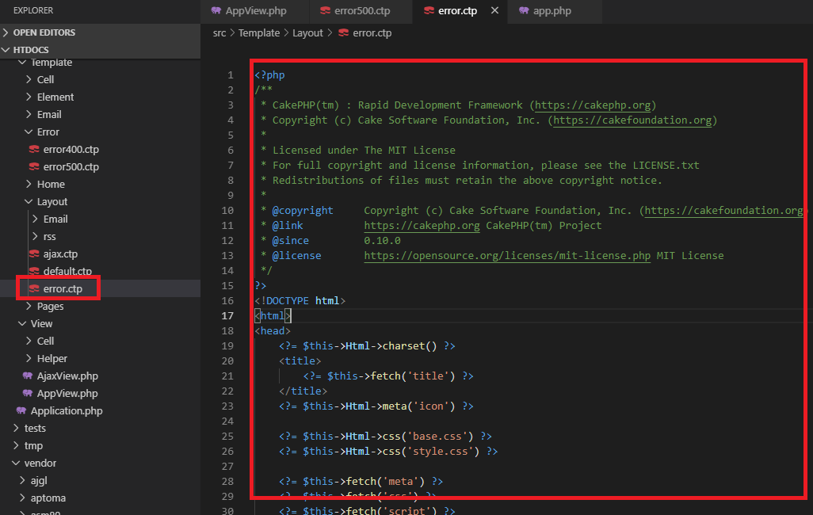
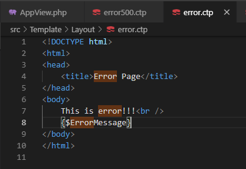
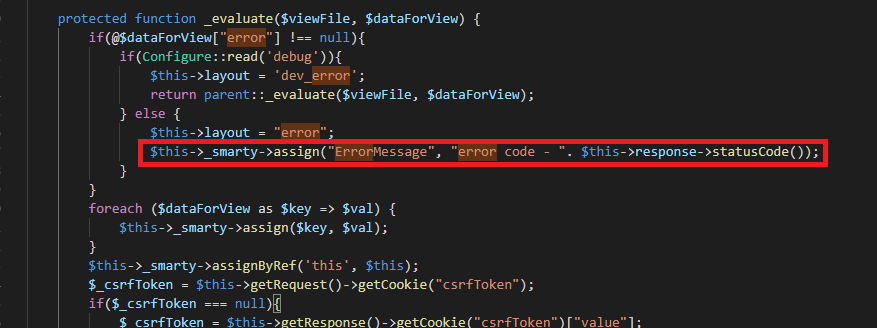
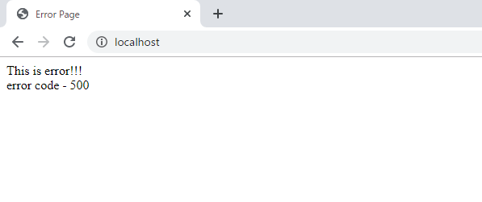

こんにちは。明月です。
この投稿はPHPのCakeフレームワークでErrorページを設定する方法に関する説明です。
CakePHPでデバッグモードでエラーが発生すると下記とおりのエラーページが表示されます。

上の画面はPHPで開発する時にエラー追跡するためのStack flowです。すごく有用な情報です。でも、我々が開発が終わった後、本番サーバーに転換する場合にエラーが発生する時、Stack flow情報が表示されると困ります。
一応、ソースの内容がユーザに見えることになるし、ユーザの立場でエラーページが表示されることはサイトの信頼度を落ちることになるでしょう。
そのため、本番サーバーではエラーが発生すれば、エラーページに遷移しなければならないです。
そうしたらconfigフォルダのapp.phpファイルを確認しましょう。

デバッグ設定するオプションがあります。初期設定は「true」になっていますが、「false」に設定しましょう。

また、エラーページを見ると上のページが表示されます。(エラーページを表示するためにはソース上でthrowをするか、要請エラーが発生するページを要請すればよいです。)
そうするとエラーページを作成しましょう。
先にViewフォルダのAppView.phpのソースから修正します。

この部分を以前Smarty設定する時に説明したことがあります。
link - [CakePHP] MVCフレームワークのCakeをインストールする方法
...
protected function _evaluate($viewFile, $dataForView) {
// エラーページの場合
if(@$dataForView["error"] !== null) {
// モードがdebugモードの場合、エラーが発生するとCakePHPのStack追跡ページが表示するようにした。
if(Configure::read('debug')) {
$this->layout = 'dev_error';
// smartyを設定しない。
return parent::_evaluate($viewFile, $dataForView);
} else {
// モードがdebugモードじゃない場合、レイアウトを「error」を表示する。
$this->layout = "error";
}
}
// smartyの値を設定
foreach ($dataForView as $key => $val) {
$this->_smarty->assign($key, $val);
}
$this->_smarty->assignByRef('this', $this);
// ページtokenキーを設定(CakePHPに基本にあるセキュリティトークン)
$_csrfToken = $this->getRequest()->getCookie("csrfToken");
if($_csrfToken === null) {
$_csrfToken = $this->getResponse()->getCookie("csrfToken")["value"];
}
$this->_smarty->assign("_csrfToken", $_csrfToken);
// smartyを設定
return $this->_smarty->fetch($viewFile);
}
...
上のソースをみれば、debugモードじゃない場合、エラーが発生すると「error」ページが表示するように設定しました。
「error」ページは各エラータイプ別で設定することも可能ですが、普通は一つのエラーページに統一します。それで我々は「error」ページだけ修正して派生ページは無視しましょう。

既存のデフォルトで様々の文法が書いていますね。綺麗にクリアしてエラーページを作成しましょう。
<!DOCTYPE html>
<html>
<head>
<title>Error Page</title>
</head>
<body>
This is error!!!<br />
{$ErrorMessage}
</body>
</html>

AppView.phpのコードで応答コードの値を「ErrorMessage」キーとしてテンプレートページに渡しましょう。

また、エラーを発生させてエラーページが正しく表示することを確認します。

ここまでPHPのCakeフレームワークでErrorページを設定する方法に関する説明でした。
ご不明なところや間違いところがあればコメントしてください。
- [CakePHP] Errorページを設定する方法2020/02/20 03:00:00
- [CakePHP] Transactionを使う方法とEntityクラスを利用してInsert、Update、Deleteする方法2020/02/19 03:00:00
- [CakePHP] ORMのテーブルFetch設定2020/02/18 03:00:00
- [CakePHP] Cakeフレームワークでデータベースに接続する時に使うQuery式とEntityクラス、Tableクラス、ResultSet2020/02/17 08:16:23
- [CakePHP] データベース(MariaDB(Mysql))を接続する方法2020/02/14 03:00:00
- [PHP] namespaceとuse2020/02/13 03:00:00
- [CakePHP] RequestとResponseに関して2020/02/12 03:00:02
- [CakePHP] PHPのCakeからAjax要請がある時、jsonタイプ(json_encode関数)でResponseする方法とControllerでViewを選択する方法2020/02/08 03:00:00
- [Java] WebSocketでチャット履歴をローディングする方法2021/06/15 18:34:45
- [Java] WebSocketを利用してユーザ(サイト運用者)が他のユーザとチャットする方法2021/06/15 17:20:08
- [Design pattern] 1-2. ビルダーパターン(Builder pattern)2021/06/11 19:06:28
- [Design pattern] 1-1. シングルトンパターン(Singleton pattern)2021/06/09 19:40:05
- [Design Pattern] デザインパターンの紹介2021/06/08 20:42:36
- [Tools] Dbeaver(無料Sql queryブラウザツール)2021/04/28 18:26:49
- [Bootstrap] HTMLデザインのフレームワークのBootstrap紹介2020/07/30 19:06:36
- [Python] メール(smtplib)を送信する方法2020/07/27 18:38:43
- [Python] HttpConnection(requestsモジュール)でウェブサーバーで接続する方法2020/07/20 14:41:51
- [Python] Excel(openpyxl)を扱う方法2020/07/16 16:40:31
- [Python] ファイル圧縮、解凍(zipfile)する方法2020/07/14 19:14:22
- [Python] Apache cgiでPythonを使う方法2020/07/09 19:58:19
- [Python] Web serverを起動する方法(http.server)2020/07/09 00:13:13
- [Python] WebSocketを使う方法2020/07/07 17:29:18
- [Python] PythonとJavaのソケット通信する方法2020/07/03 18:35:50